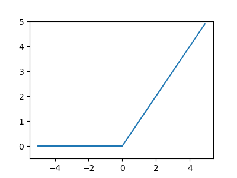
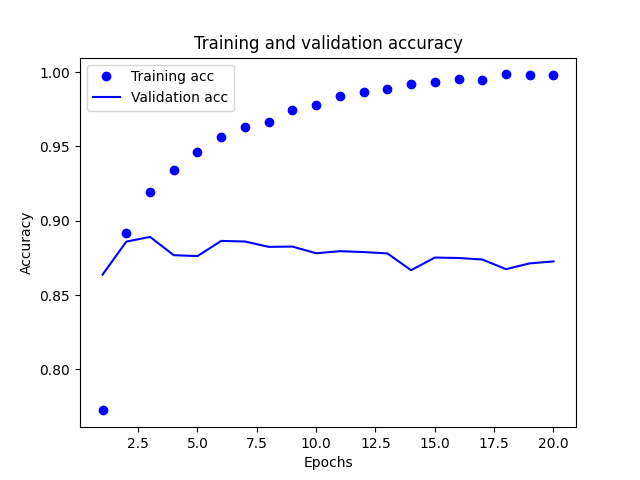
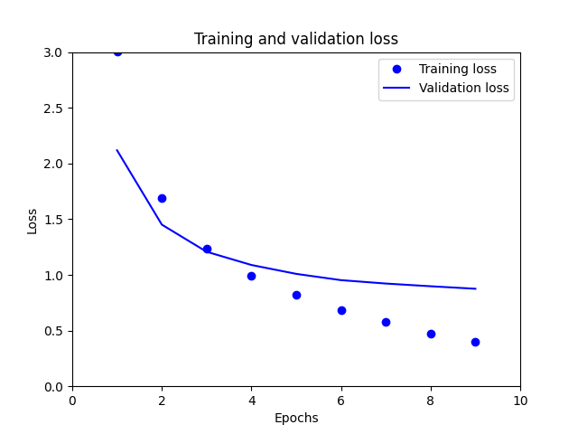

深度學習
Table of Contents

1. 深度學習

Figure 1: AI, Machine Learning與Deep Learning
在神經網路中我們曾經提及：
深度神經網路(Deep Neural Network, DNN)，顧名思義就是有很多層的神經網路。然而，幾層才算是多呢？一般來說有1-2個隱藏層的神經網絡就可以叫做多層，準確的說是(淺層)神經網絡(Shallow Neural Networks)。隨著隱藏層的增多，更深的神經網絡(一般來說超過3層)就都叫做深度神經網路1。而那些以深度神經網路為模型的機器學習就是我們耳熟能詳的深度學習。
那麼幾層才算是夠深呢？實際上，「深度」只是一個商業概念，很多時候工業界把3層隱藏層也叫做「深度學習」，在機器學習領域的約定俗成是，名字中有深度(Deep)的網絡僅代表其有超過5-7層的隱藏層2。
典型的深度學習如圖2，在此例中，輸入為一張手寫數字的影像，經由 4 層的深度學習模型後得知此數字為 4。

Figure 2: 典型的深度神經網路-1
圖3進一步說明網路模型中每一層的作用，可以將每一層網路視為對影像的特殊運算，如此一層一層逐一精煉(purified)，最後得到結果。

Figure 3: 典型的深度神經網路-2
關於增加層數的重要性，目前還缺乏理論佐證，但從過往的研究或實驗中，有幾點可以說明。
- 在 ILSVRC 這種大型視覺辨識競賽結果中，加深層數的比例多與辨識效能成正比。
- 加深層數可以在減少網路參數的狀況下得到相同成效，透過重叠層級，可以讓 ReLU 等活化函數夾在卷積層之間，進一步提高網路的表現力，因為透過活化函數，可以在網路增加「非線性」的能力，重叠非線性函數，也能達到更複雜的表現力。
- 學習的效率也是加深層數的優點之一，卷積層的神經元會反應出邊界等單純形狀，隨著層數增加，可以反應出紋理、物體部位等特質，依照階層逐漸變複雜。
- 以辨識「狗」為例子，如果要以層數較少的網路來解決這個問題，卷積層就要一次「理解」眾多特徵，還要因應不同拍攝環境帶來的變化，一次處理這些龐大的資料會花費許多學習時間； 如果加深層數，就能用階層分解必須學習的問題，每一層可以處理單純的問題，例如，最初的層級可以只學習邊界，利用少量的學習資料來進行效率化的學習。
- 加深層數可以階層性的傳遞資料，例如，擷取出邊界的下一層會使用邊界資料來學習更高階的問題（如判斷形狀）。
1.1. 深度學習的知名模型
幾個知名的深度學習模型如下：
1.1.1. VGG
VGG 為由卷積層與池化層構成的基本 CNN。特色是含權重層（卷積層及全連接層）共 16-19 層，有時會稱為 VGG16 或 VGG19。VGG 由於結構非常簡單，應用性高，所以多數技術人員喜歡使用以 VGG 為最基礎的網路。
1.1.2. GoogLeNet
GoogLeLeNet 基本上與 CNN 相同，其特色是不僅會往垂直方向加深網路，也會往水平方向加深。GoogLeNet 往水平方向的做法稱為「Inception 結構」。
1.1.3. ResNet
ResNet 是由 Microsoft 團隊開發的網路，特色是具有能加深比過去更多層的「結構」，為了解決因加深過多層數無法順利學習的問題，ResNet 導入了「跳躍結構」（也稱為捷徑或分流）。跳躍結構是「直接」傳遞輸入資料，所以在反向傳播時，也會將上層的梯度「直接」傳遞給下層。透過這種跳躍結構，不用擔心梯度變小（或變得太大），可以把「具有意義的梯度」傳遞給上層。因此，跳躍結構能減少之前因為加深層數，使得梯度變小，出現梯度消失的問題。
1.2. 深度學習的高速化
由於大數據(big data)與大型網路的關係，使得深度學習必須進行大量運算，過去我們使用 CPU 來進行運算，如今多數深度學習的框架多支援 GPU，甚至支援以多個 GPU 與多台裝置進行分散式學習。GPU 原本是圖形專用處理器，可以快速處理平行運算，GPU 運算的目標是把其強大的效能運用在各種用途。比較 CPU 與 GPU 在 AlexNet 的學習，CPU 需花費 40 天以上，GPU 則可以在 6 天內完成。
利用 GPU 除了可以大幅提升深度學習的運算速度，但是一旦變成多層網路時，就需要花費數天或數週的時間來學習，Google 的 TensorFlow、Microsoft 的 CNTK 便是針對分散式學習來開發的，100 個分散式的 GPU 可以提升比單一 GPU 高到 56 倍的速度，意味著原本要有天才能完成的學習，只要 3 小時就可以結束。
在深度學習的高速化過程中，包含運算量在內，記憶體容量、匯流排頻寬等，都會造成瓶頸，就記憶體容量來說，必須考慮到大量權重參數及中間資料會儲存在記憶體的情況。至於匯流排頻寛，一旦通過 GPU(或 CPU)的匯流排資料超過一定的限制，該處就會形成瓶頸，所以，最好能儘量減少通過網路的資料位元數。
1.2.1. GPU v.s. CPU
Figure 4: CPU 與 GPU 在架構上的設計差異
如圖4，CPU 和 GPU 的差異起源於其相異的設計目標與應用場景， CPU的設計目的是處理各種不同的數據運算、邏輯判斷和中斷要求;而 GPU 的設計目的則是為了圖形運算， 其優勢在於能快速對同類型的數據進行平行運算3。二者主要差異大致如下：
- CPU 是由幾個每次可處理數個獨立「執行緒」(threads)的核心(core)所組成；GPU 則有數百個這樣的核心，同時可以處理上千個執行緒
- CPU 主要是線性執行； GPU 則是個高度平行化的單元
- CPU 的發展主要致力於最佳化系統的遲滯時間，讓系統能有迅速流暢的反應；GPU 的發展則是朝頻寬最佳化努力。在深度神經網路中，頻寬為主要的系統瓶頸
- GPU 的 Level 1 cache 比 CPU 快且大，在深度神經網路中，大部份的資料都會再次被使用到
2. 深度學習運作原理
2.1. Layer, 損失函數與優化器
前節深度學習中的每一「層」(layer)如何運作，取決於儲存於該層的權重(weight)，而權重是由多個數字組成。從技術層面來看，layer 是由各個權重參數(parameters)來和輸入的資料(如圖5中的X)進行運算以執行資料轉換的工作(如圖5)。而所謂的學習，指的就是幫助神經網路的每一層找出適當的權重值，讓神經網路可以將輸入的訓練資料經由與權重的運作推導出接近標準答案的運算結果(即圖5中的預測 Y)。
然而，這在實際運作上是十分困難的，因為一個深度神經網路可以包含數千萬個權重，此外，其中一個權重被改變後，往往會影響其他權重的運作。

Figure 5: nn 中 layer 的 parameter
為了提高神經網路的效能(預測的準確率)，我們要即時的掌握目前的輸出(Y)與真正的標準答案Y還差多少，這個評估由神經網路的損失函數(loss function;或稱目標函數, objective function;或稱成本函數, cost function4)來負責，如圖6。損失函數會取得神經網路的預測結果與標準答案二者的損失分數(又稱差距分數)，做為每一次學習的表現效能之評估標準。

Figure 6: 損失函數
而深度學習的基本工作就是使用損失函數做為回饋訊息來一步步微調權重，逐步降低每次學習的損失分數，最終目標在於讓損失函數結果達到最小，而這個微調工作則由優化器(optimizer，也稱最佳化函數)來執行。優化器實作了反向傳播演算法(Backpropagation)，這也是深度學習中的核心演算法，藉此來週整權重。

Figure 7: 優化器
事實上，同樣的流程我們也曾在迴歸裡看過，在找到一條理想的迴歸方程式時，我們也是先隨便找一條，然後用loss function去評估這條方程式的優劣，再「求切線斜率」的方式來修正方程式的係數。差別只在於：在迴歸時我們要修正的係數只有一、兩個，而在深度學習中，我們要同時修正成千上萬個權重。
那麼，在最初一次的學習，權重的值是如何設定的呢？可以先全數設為零，但更常用的做法是隨機指定，隨著多次學習後，權重會逐步往正確的方向調整，損失分數也會慢慢降低。
我們再複習一下神經網路這章裡的文字：
是的，就如同考試時你面對陌生選擇題的反應，神經網路也決定這麼幹，隨便丟一些數值填到矩陣中當成第一批參數。事實上，同樣的策略我們在線性迴歸:年齡身高預測/隨機的力量裡已經玩過了，當初在找出方程式的最佳參數組合時，我們也是閉上眼睛隨便選一組。不管整個網路中有多少參數，當我們隨機設定好了所有參數的最初值後，整個神經網就就可以運作了，嗯…至少已經可以依照前向傳播的流程輸出第一個預測結果了，你看，我們已經朝完美的人工智慧跨近一大步了-_-
接下來的流程其實和迴歸有點類似，我們評估預測結果的品質，然後回頭修正參數，只是這次的工程有點浩大，我們要修正所有的參數，這個回頭修正所有參數的過程稱為反向傳播(backward propagation)。
3. 實作範例
3.1. 二元分類：IMDB
自 IMDB 資料集中取得 50000 個正/負評論，各 25000 個，該資料集已內建於 Keras 中，且資料已先預處理，電影評論內容為由單字構成的 list 結構，例如，若評論內容為“In a Wonderful morning…”，其 list 結構可能為(8, 3, 386, 1969…)，每個單字都會依據其出現頻率給定一個編號，編號越小越常見。(與 IMDb 相關的 paper 參見Sentiment Analysis on IMDb / paperswithcode
1: from keras.datasets import imdb 2: (train_data, train_labels), (test_data, test_labels) = imdb.load_data(num_words=10000) 3: print(train_data[0]) 4: print(train_labels[0])
Downloading data from https://storage.googleapis.com/tensorflow/tf-keras-datasets/imdb.npz 17464789/17464789 [==============================] - 35s 2us/step [1, 14, 22, 16, 43, 530, 973, 1622, 1385, 65, 458, 4468, 66, 3941, 4, 173, 36, 256, 5, 25, 100, 43, 838, 112, 50, 670, 2, 9, 35, 480, 284, 5, 150, 4, 172, 112, 167, 2, 336, 385, 39, 4, 172, 4536, 1111, 17, 546, 38, 13, 447, 4, 192, 50, 16, 6, 147, 2025, 19, 14, 22, 4, 1920, 4613, 469, 4, 22, 71, 87, 12, 16, 43, 530, 38, 76, 15, 13, 1247, 4, 22, 17, 515, 17, 12, 16, 626, 18, 2, 5, 62, 386, 12, 8, 316, 8, 106, 5, 4, 2223, 5244, 16, 480, 66, 3785, 33, 4, 130, 12, 16, 38, 619, 5, 25, 124, 51, 36, 135, 48, 25, 1415, 33, 6, 22, 12, 215, 28, 77, 52, 5, 14, 407, 16, 82, 2, 8, 4, 107, 117, 5952, 15, 256, 4, 2, 7, 3766, 5, 723, 36, 71, 43, 530, 476, 26, 400, 317, 46, 7, 4, 2, 1029, 13, 104, 88, 4, 381, 15, 297, 98, 32, 2071, 56, 26, 141, 6, 194, 7486, 18, 4, 226, 22, 21, 134, 476, 26, 480, 5, 144, 30, 5535, 18, 51, 36, 28, 224, 92, 25, 104, 4, 226, 65, 16, 38, 1334, 88, 12, 16, 283, 5, 16, 4472, 113, 103, 32, 15, 16, 5345, 19, 178, 32] 1
如上為第一筆評論的單字代號與評論結果，若要將原始資料的單字代號還原，其程式碼如下：
1: # word_index is a dictionary mapping words to an integer index 2: word_index = imdb.get_word_index() 3: print("字典中key為this對應的value:",word_index['this']) 4: # We reverse it, mapping integer indices to words 5: reverse_word_index = dict([(value, key) for (key, value) in word_index.items()]) 6: print("反轉字典中key為11所對應到的value:",reverse_word_index[11]) 7: print("反轉字典中key為1所對應到的value:",reverse_word_index[1]) 8: print("反轉字典中key為2所對應到的value:",reverse_word_index[2]) 9: # We decode the review; note that our indices were offset by 3 10: # because 0, 1 and 2 are reserved indices for "padding", "start of sequence", and "unknown". 11: decoded_review = ' '.join([reverse_word_index.get(i - 3, '?') for i in train_data[0]]) 12: print(decoded_review)
字典中key為this對應的value: 11 反轉字典中key為11所對應到的value: this 反轉字典中key為1所對應到的value: the 反轉字典中key為2所對應到的value: and ? this film was just brilliant casting location scenery story direction everyone's really suited the part they played and you could just imagine being there robert ? is an amazing actor and now the same being director ? father came from the same scottish island as myself so i loved the fact there was a real connection with this film the witty remarks throughout the film were great it was just brilliant so much that i bought the film as soon as it was released for ? and would recommend it to everyone to watch and the fly fishing was amazing really cried at the end it was so sad and you know what they say if you cry at a film it must have been good and this definitely was also ? to the two little boy's that played the ? of norman and paul they were just brilliant children are often left out of the ? list i think because the stars that play them all grown up are such a big profile for the whole film but these children are amazing and should be praised for what they have done don't you think the whole story was so lovely because it was true and was someone's life after all that was shared with us all
上述程式中第2行主要負責取得單字(key)的對應數字(value)的字典，再藉由第5行將(key:value)轉換為(value:key)，最後第11行將字典中的單字回復至原始評論，程式中(i-3)的原因是imdb.load_data已預留了第 0~2 個位置做特殊用途。
3.1.1. 準備資料
由於 IMDB 匯入 train_data 及 test_data 均為 list 型態，要先轉換為 tensor 才能輸入至神經網路，方法有二：
- 填補資料中每個子 list 內容使其具有相同長度，再做reshape
- 對每個子 list 做 one-hot encoding，其程式碼如下：
1: import numpy as np 2: def vectorize_sequences(sequences, dimension=10000): 3: # Create an all-zero matrix of shape (len(sequences), dimension) 4: results = np.zeros((len(sequences), dimension)) 5: for i, sequence in enumerate(sequences): 6: results[i, sequence] = 1. # set specific indices of results[i] to 1s 7: return results 8: print(train_data.shape) 9: print(train_data[0]) 10: # Our vectorized training data 11: 12: x_train = vectorize_sequences(train_data) 13: # Our vectorized test data 14: x_test = vectorize_sequences(test_data) 15: print(x_train.shape) 16: print(x_train[0]) 17: 18: # 最後再將標籤資料也向量化 19: y_train = np.asarray(train_labels).astype('float32') 20: y_test = np.asarray(test_labels).astype('float32') 21: 22: print(y_train[0])
(25000,) [1, 14, 22, 16, 43, 530, 973, 1622, 1385, 65, 458, 4468, 66, 3941, 4, 173, 36, 256, 5, 25, 100, 43, 838, 112, 50, 670, 2, 9, 35, 480, 284, 5, 150, 4, 172, 112, 167, 2, 336, 385, 39, 4, 172, 4536, 1111, 17, 546, 38, 13, 447, 4, 192, 50, 16, 6, 147, 2025, 19, 14, 22, 4, 1920, 4613, 469, 4, 22, 71, 87, 12, 16, 43, 530, 38, 76, 15, 13, 1247, 4, 22, 17, 515, 17, 12, 16, 626, 18, 2, 5, 62, 386, 12, 8, 316, 8, 106, 5, 4, 2223, 5244, 16, 480, 66, 3785, 33, 4, 130, 12, 16, 38, 619, 5, 25, 124, 51, 36, 135, 48, 25, 1415, 33, 6, 22, 12, 215, 28, 77, 52, 5, 14, 407, 16, 82, 2, 8, 4, 107, 117, 5952, 15, 256, 4, 2, 7, 3766, 5, 723, 36, 71, 43, 530, 476, 26, 400, 317, 46, 7, 4, 2, 1029, 13, 104, 88, 4, 381, 15, 297, 98, 32, 2071, 56, 26, 141, 6, 194, 7486, 18, 4, 226, 22, 21, 134, 476, 26, 480, 5, 144, 30, 5535, 18, 51, 36, 28, 224, 92, 25, 104, 4, 226, 65, 16, 38, 1334, 88, 12, 16, 283, 5, 16, 4472, 113, 103, 32, 15, 16, 5345, 19, 178, 32] (25000, 10000) [0. 1. 1. ... 0. 0. 0.] 1.0
3.1.2. 建立神經網路
要建構一個 Dense 層堆疊架構的神經網路，要考慮兩個關鍵：
- 要用多少層？
- 每一層要有多少神經元？
此處使用兩個中間層、一個輸出層，如圖8，一般的神經網路中，對那些介於輸入層和輸出層間的layer，我們習慣上稱之為隱藏層(hidden layers)，但此處 Keras 的輸入層也有隱藏層的特性。圖8的 hidden layer 以 relu 為啟動函數，輸出層以 sigmoid 啟動函數輸出機率值。

Figure 8: IMDB model 架構
由於輸入資料為向量、標籤為純量(1, 0)，對這樣的問題，適合用 relu 啟動函數的全連接層(Dense)堆疊架構：Dense(16, activation=’relu’)。其中 16 指該層神經元的數量(也可看成該層的寬度)，典型旳寫法為：
# 加入Dense隱藏層，該層有16個神經元 model.add(layers.Dense(16, activation='relu'))
擁有 16 個神經單元表示權重矩陣 W 的 shape 為(input_dimension, 16)，在 W 和 input 做內積後，input 資料會被映射到 16 維的空間上，最後加上 b、套用 relu 運算來產生輸出值。每一層的神經元數越多，可以讓神經網路學習更複雜的資料表示法，但也使計算成本更高。

Figure 9: ReLU 函數圖
為何要有 relu 等啟動函數？原因之一是這類函數為非線性函數(如圖9)，回顧神經網路中的「學測成績預測模型」，像圖10的模型，我們也只是在解一個如\(f(x)=x_1*w_1+x_2*w_2+x_3*w_3+...+x_7*w_7\)這樣的函式問題。

Figure 10: 學測成績預測模型#2
就算我們把模型2進化為模型3(如圖11)，本質上也仍只是一層，再多的層數也能合併為一層，此類模型並無助於複雜的學習。為了有效讓模型更加複雜，此處可以在模型中加入非線性轉換，如圖9中的ReLU激勵函數。

Figure 11: 學測成績預測模型#3
圖8的實作程式如下：
1: from keras import models 2: from keras import layers 3: 4: model = models.Sequential() 5: model.add(layers.Dense(16, activation='relu', input_shape=(10000,))) 6: model.add(layers.Dense(16, activation='relu')) 7: model.add(layers.Dense(1, activation='sigmoid'))
建好 model 後，要選擇一個損失函數和一個優化器，由於要處理的是二元分類問題，所以最好用 binary_crossentropy 損失函數，因為 crossentropy 主要就是用來測量機率分佈之間的距離(差異)。其實作如下：
1: model.compile(optimizer='rmsprop', 2: loss='binary_crossentropy', 3: metrics=['accuracy'])
之所以能將 optimizer 和 loss function 以字串方式經由參數傳給 compile()，這是因為 rmsprop、binary_crossentropy 和 accuracy 均已事先在 Keras 套件中定義好了，若是要進一步自訂參數(如自訂學習率)，做法如下：
1: # 調整learning rate 2: from keras import optimizers 3: 4: model.compile(optimizer=optimizers.RMSprop(learning_rate=0.001), 5: loss='binary_crossentropy', 6: metrics=['accuracy']) 7: 8: # 使用另外的評估函數 9: from keras import losses 10: from keras import metrics 11: 12: model.compile(optimizer=optimizers.RMSprop(learning_rate=0.001), 13: loss=losses.binary_crossentropy, 14: metrics=[metrics.binary_accuracy])
WARNING:absl:At this time, the v2.11+ optimizer `tf.keras.optimizers.RMSprop` runs slowly on M1/M2 Macs, please use the legacy Keras optimizer instead, located at `tf.keras.optimizers.legacy.RMSprop`. WARNING:absl:At this time, the v2.11+ optimizer `tf.keras.optimizers.RMSprop` runs slowly on M1/M2 Macs, please use the legacy Keras optimizer instead, located at `tf.keras.optimizers.legacy.RMSprop`.
若您使用的是M1/M2核心的Mac電腦，則可能會出現上述訊息，雖然不影響正執行結果，但你仍可以參考stackoverflow上的這篇文章來解決這些惱人的訊息。
3.1.3. 驗證神經網路的 model
為了在訓練期間監控 model 對新資料的準確度，可以從原始訓練資料中分離出 10000 個樣本來建立驗證資料集。
1: x_val = x_train[:10000] # 前10000個資料為驗證集 2: partial_x_train = x_train[10000:] # 第10000個以後為訓練集 3: 4: y_val = y_train[:10000] 5: partial_y_train = y_train[10000:]
接下來才是使用 fit()來訓練模型，進行 20 個訓練週期(epoch，即，把 x_train 和 y_train 張量中的所有訓練樣本進行 20 輪的訓練)，以 512 個小樣本的小批量(batch_size)進行訓練，
1: history = model.fit(partial_x_train, 2: partial_y_train, 3: epochs=20, 4: batch_size=512, 5: validation_data=(x_val, y_val))
Epoch 1/20 30/30 [==============================] - 2s 44ms/step - loss: 0.5010 - accuracy: 0.7841 - val_loss: 0.3645 - val_accuracy: 0.8758 Epoch 2/20 30/30 [==============================] - 1s 25ms/step - loss: 0.2951 - accuracy: 0.9032 - val_loss: 0.3066 - val_accuracy: 0.8823 ...略... Epoch 19/20 30/30 [==============================] - 1s 17ms/step - loss: 0.0089 - accuracy: 0.9987 - val_loss: 0.6555 - val_accuracy: 0.8679 Epoch 20/20 30/30 [==============================] - 0s 15ms/step - loss: 0.0036 - accuracy: 0.9999 - val_loss: 0.7007 - val_accuracy: 0.8644
model.fit()會回傳一個 history 物件，這物件本身有一個 history 屬性，為一個包含有關訓練過程中相關數據的字典，這個字期包含有 4 個項目(val_loss, val_acc, loss, acc)，為訓練和驗證時監控的指標。
1: # 秀出history架構 2: history_dict = history.history 3: print(history_dict.keys()) 4: 5: # 畫圖 6: import matplotlib.pyplot as plt 7: accuracy = history.history['accuracy'] 8: val_accuracy = history.history['val_accuracy'] 9: loss = history.history['loss'] 10: val_loss = history.history['val_loss'] 11: epochs = range(1, len(accuracy) + 1)# "bo" is for "blue dot" 12: plt.plot(epochs, loss, 'bo', label='Training loss') 13: # b is for "solid blue line" 14: plt.plot(epochs, val_loss, 'b', label='Validation loss') 15: plt.title('Training and validation loss') 16: plt.xlabel('Epochs') 17: plt.ylabel('Loss') 18: plt.legend() 19: plt.plot() 20: plt.savefig("images/imdb-Keras-1.png") 21: #plt.show()plt.clf() # clear figureplt.clf() 22: acc_values = history_dict['accuracy'] 23: val_acc_values = history_dict['val_accuracy'] 24: plt.plot(epochs, accuracy, 'bo', label='Training acc') 25: plt.plot(epochs, val_accuracy, 'b', label='Validation acc') 26: plt.title('Training and validation accuracy') 27: plt.xlabel('Epochs') 28: plt.ylabel('Loss') 29: plt.legend() 30: plt.plot() 31: plt.savefig("images/imdb-Keras-2.png") 32: #plt.show()
dict_keys(['loss', 'accuracy', 'val_loss', 'val_accuracy'])

Figure 12: IMDB-Keras-1

Figure 13: IMDB-Keras-2
3.1.4. 優化 model
由圖15、16可以看出，上述 model 雖然在訓練階段的效能不錯，loss function 隨 epoch 下降、accuracy 也隨 epoch 升高，但在驗證階段的表現卻十分不理想，不僅 accuracy 隨 epoch 的增加呈緩降趨勢，loss function 甚至還往上急升。
第二版的 model 做了以下改進:
- 將資料向量化(vectorize_sequences())
- 加入了兩層 layer 以及 dropout 層，其架構如圖14

Figure 14: IMDB model 架構#2
1: # 向量化function 2: def vectorize_sequences(sequences, dimension=10000): 3: # Create an all-zero matrix of shape (len(sequences), dimension) 4: results = np.zeros((len(sequences), dimension)) 5: for i, sequence in enumerate(sequences): 6: results[i, sequence] = 1. # set specific indices of results[i] to 1s 7: return results 8: # Our vectorized training data 9: x_train = vectorize_sequences(train_data) 10: # Our vectorized test data 11: x_test = vectorize_sequences(test_data) 12: # 最後再將標籤資料也向量化 13: y_train = np.asarray(train_labels).astype('float32') 14: y_test = np.asarray(test_labels).astype('float32') 15: # 建立model 16: model = models.Sequential() 17: model.add(layers.Dense(16, activation='relu', input_shape=(10000,))) 18: model.add(layers.Dense(64, activation='relu')) 19: model.add(layers.Dropout(0.25)) 20: model.add(layers.Dense(64, activation='relu')) 21: model.add(layers.Dropout(0.25)) 22: model.add(layers.Dense(1, activation='sigmoid')) 23: 24: #判斷作業系統類型，選擇優化器 25: import platform 26: if platform.system() == "Darwin" and platform.processor() == "arm": 27: opt = optimizers.legacy.RMSprop(learning_rate=0.0001) 28: else: 29: opt = optimizers.RMSprop(learning_rate=0.0001) 30: 31: model.compile(optimizer=opt, loss='binary_crossentropy', 32: metrics=[metrics.binary_accuracy]) 33: 34: # 驗證數據集 35: x_val = x_train[:10000] # 前10000個資料為驗證集 36: partial_x_train = x_train[10000:] # 第10000個以後為訓練集 37: y_val = y_train[:10000] 38: partial_y_train = y_train[10000:] 39: 40: # 訓練model 41: history = model.fit(partial_x_train, partial_y_train, 42: epochs=20, batch_size=512, 43: validation_data=(x_val, y_val), verbose=0) 44: 45: # 秀出history架構 46: history_dict = history.history 47: print(history_dict.keys()) 48: 49: # 進行預測 50: x = model.predict(x_test) 51: print(x) 52: 53: # 畫圖 54: import matplotlib.pyplot as plt 55: plt.clf() 56: binary_accuracy = history.history['binary_accuracy'] 57: val_binary_accuracy = history.history['val_binary_accuracy'] 58: loss = history.history['loss'] 59: val_loss = history.history['val_loss'] 60: epochs = range(1, len(binary_accuracy) + 1)# "bo" is for "blue dot" 61: plt.plot(epochs, loss, 'bo', label='Training loss') 62: # b is for "solid blue line" 63: plt.plot(epochs, val_loss, 'b', label='Validation loss') 64: plt.title('Training and validation loss') 65: plt.xlabel('Epochs') 66: plt.ylabel('Loss') 67: plt.legend() 68: plt.plot() 69: plt.savefig("images/imdb-Keras-3.png") 70: #plt.show() 71: 72: plt.clf() 73: acc_values = history_dict['binary_accuracy'] 74: val_acc_values = history_dict['val_binary_accuracy'] 75: plt.plot(epochs, binary_accuracy, 'bo', label='Training acc') 76: plt.plot(epochs, val_binary_accuracy, 'b', label='Validation acc') 77: plt.title('Training and validation accuracy') 78: plt.xlabel('Epochs') 79: plt.ylabel('Loss') 80: plt.legend() 81: plt.plot() 82: plt.savefig("images/imdb-Keras-4.png") 83: #plt.show()
dict_keys(['loss', 'binary_accuracy', 'val_loss', 'val_binary_accuracy']) 782/782 [==============================] - 1s 670us/step [[0.13477947] [0.99921584] [0.87466985] ... [0.04399278] [0.0864688 ] [0.42204612]]
Figure 15: IMDB-Keras-1
Figure 16: IMDB-Keras-2

Figure 17: IMDB-Keras-3

Figure 18: IMDB-Keras-4
比較上述兩組結果，可以發現優化版的 model 在 loss function 以及 accuracy 的表現都有進步。
3.2. 多類別分類：數位新聞
目標：將路透社(Reuters)的數位新聞專欄分成 46 個主題，這屬於多類別分類(multiclass classification)問題，每個資料點只會被歸入一個類別；如果每個資料點可能屬於多個類別，則屬於多標籤多類別(multilabel multiclass classification)問題。
3.2.1. 資料集
和 MNIST、IMDB 一樣，這組由 Reuters 在 1986 年發布的簡短新聞主題資料集也內建在 Keras 中，這個資料集總共分為 46 個不同主題。
1: from keras.datasets import reuters 2: (train_data, train_labels), (test_data, test_labels) = reuters.load_data(num_words=10000) 3: print(train_data[0]) 4: print(train_labels[0])
[1, 2, 2, 8, 43, 10, 447, 5, 25, 207, 270, 5, 3095, 111, 16, 369, 186, 90, 67, 7, 89, 5, 19, 102, 6, 19, 124, 15, 90, 67, 84, 22, 482, 26, 7, 48, 4, 49, 8, 864, 39, 209, 154, 6, 151, 6, 83, 11, 15, 22, 155, 11, 15, 7, 48, 9, 4579, 1005, 504, 6, 258, 6, 272, 11, 15, 22, 134, 44, 11, 15, 16, 8, 197, 1245, 90, 67, 52, 29, 209, 30, 32, 132, 6, 109, 15, 17, 12] 3
將資料向量化有幾種方式：將 label list 轉為整數張量，或是用 one-hot 編碼。以下為使用 python 自訂的編碼程式：
1: import numpy as np 2: 3: def vectorize_sequences(sequences, dimension=10000): 4: results = np.zeros((len(sequences), dimension)) 5: for i, sequence in enumerate(sequences): 6: results[i, sequence] = 1. 7: return results 8: 9: # Our vectorized training data 10: x_train = vectorize_sequences(train_data) 11: # Our vectorized test data 12: x_test = vectorize_sequences(test_data) 13: print('原始資料集維度:',train_data.shape) 14: print('向量化資料集維度:',x_train.shape) 15: print(x_train[0])
原始資料集維度: (8982,) 向量化資料集維度: (8982, 10000) [0. 1. 1. ... 0. 0. 0.]
另外，Keras 也有一個內建的函式可用：
1: from tensorflow.keras.utils import to_categorical 2: 3: one_hot_train_labels = to_categorical(train_labels) 4: one_hot_test_labels = to_categorical(test_labels) 5: print(one_hot_train_labels.shape) 6: print(one_hot_train_labels[0])
(8982, 46) [0. 0. 0. 1. 0. 0. 0. 0. 0. 0. 0. 0. 0. 0. 0. 0. 0. 0. 0. 0. 0. 0. 0. 0. 0. 0. 0. 0. 0. 0. 0. 0. 0. 0. 0. 0. 0. 0. 0. 0. 0. 0. 0. 0. 0. 0.]
3.2.2. 建立神經網路
此次面臨的問題不似 IMDB 只分成兩類，而是共有 46 類，若每個 Dense layer 仍只使用16個維度，可能無法學會區分 46 個不同類別，故有需要將維度增加：
1: from keras import models 2: from keras import layers 3: 4: model = models.Sequential() 5: model.add(layers.Dense(64, activation='relu', input_shape=(10000,))) 6: model.add(layers.Dense(64, activation='relu')) 7: model.add(layers.Dense(46, activation='softmax'))
另外，輸出層將啟動函數由 sigmoid 改為 softmax，以機率值來顯示預測的類別結果，配合這種情境，最適合的損失函數為 categorical_crossentropy，它可以測量兩個機率分佈間的差距（即神經網路輸出的預測機率分佈與真實分佈間的距離），透過最小化這兩個分佈間的距離來訓練神經網路，讓結果接近答案。
1: model.compile(optimizer='rmsprop', loss='categorical_crossentropy', 2: metrics=['accuracy'])
此處的metrics用來儲存後續評估(model.evaluate)模型的記錄
3.2.3. 驗證數據集
由訓練集抽出 1000 個樣本來驗證：
1: x_val = x_train[:1000] 2: partial_x_train = x_train[1000:] 3: 4: y_val = one_hot_train_labels[:1000] 5: partial_y_train = one_hot_train_labels[1000:]
3.2.4. 訓練模型
1: history = model.fit(partial_x_train, 2: partial_y_train, 3: epochs=9, 4: batch_size=512, 5: validation_data=(x_val, y_val), 6: verbose=0) 7: history_dict = history.history 8: print(history_dict.keys())
dict_keys(['loss', 'accuracy', 'val_loss', 'val_accuracy'])
3.2.5. 評估模型
程式第6行的model.evaluate()會傳回兩個結果:
- loss value
- model.compile()時指定的metrics，這裡會記錄accuracy
1: print('loss:', history_dict['loss']) 2: print('accuracy:', history_dict['accuracy']) 3: print('val_accuracy:', history_dict['val_accuracy']) 4: # 評估 5: # Returns the loss value & metrics values for the model in test mode. 6: results = model.evaluate(x_test, one_hot_test_labels) 7: print("評估資料內容：",results) 8: # 預測 9: predictions = model.predict(x_test) 10: print("預測資料架構：",predictions[0].shape) 11: print("預測資料內容：",predictions[0]) 12: print("預測結果:",np.argmax(predictions[0])) 13: print("答案:",one_hot_test_labels[0])
loss: [0.23970305919647217, 0.2028971165418625, 0.18050165474414825, 0.16348564624786377, 0.14964115619659424, 0.14013586938381195, 0.13095684349536896, 0.1236189678311348, 0.11970153450965881] accuracy: [0.9445001482963562, 0.9502630829811096, 0.9521422982215881, 0.9515159130096436, 0.9556502103805542, 0.9548985362052917, 0.9553996324539185, 0.9576547145843506, 0.9574041366577148] val_accuracy: [0.7990000247955322, 0.8220000267028809, 0.8209999799728394, 0.8169999718666077, 0.8149999976158142, 0.8100000023841858, 0.8080000281333923, 0.8119999766349792, 0.8149999976158142] 71/71 [==============================] - 0s 994us/step - loss: 1.1759 - accuracy: 0.7907 評估資料內容： [1.1759308576583862, 0.790739119052887] 71/71 [==============================] - 0s 747us/step 預測資料架構： (46,) 預測資料內容： [9.4937323e-06 3.6443867e-05 4.1897138e-07 8.9287710e-01 1.0305237e-01 7.9761328e-08 3.7770697e-08 1.4734838e-05 1.3683739e-03 3.5000145e-08 1.5104798e-06 2.8917767e-04 9.3399522e-06 1.2614631e-05 3.2949796e-05 9.3838331e-08 1.3987279e-04 8.5348020e-06 3.8895523e-06 6.5101567e-04 9.0811914e-04 2.6460900e-04 2.1848352e-06 7.0889015e-05 7.4386901e-07 1.2730087e-06 1.2880573e-08 2.0513512e-06 1.9234722e-05 3.4746241e-05 6.6688386e-05 6.4851406e-07 2.9292633e-07 1.9099436e-07 1.1117180e-05 3.5746339e-07 7.1021852e-05 2.9590351e-06 2.5054899e-06 2.6526579e-05 3.4896138e-07 5.1099514e-06 5.6957099e-08 1.9141594e-07 9.1464599e-08 8.4113566e-08] 預測結果: 3 答案: [0. 0. 0. 1. 0. 0. 0. 0. 0. 0. 0. 0. 0. 0. 0. 0. 0. 0. 0. 0. 0. 0. 0. 0. 0. 0. 0. 0. 0. 0. 0. 0. 0. 0. 0. 0. 0. 0. 0. 0. 0. 0. 0. 0. 0. 0.]
上述程式在經由 9 個 epoch 後精準度已近 80%(0.79)。
3.2.6. 評估結果視覺化
1: # 畫圖 2: import matplotlib.pyplot as plt 3: 4: loss = history.history['loss'] 5: val_loss = history.history['val_loss'] 6: 7: epochs = range(1, len(loss) + 1) 8: 9: plt.plot(epochs, loss, 'bo', label='Training loss') 10: plt.plot(epochs, val_loss, 'b', label='Validation loss') 11: plt.title('Training and validation loss') 12: plt.xlabel('Epochs') 13: plt.ylabel('Loss') 14: plt.axis([0, 10, 0, 3]) 15: plt.legend() 16: plt.plot() 17: plt.savefig("images/reuters-1.png") 18: #plt.show() 19: 20: plt.clf() # clear figure 21: 22: accuracy = history.history['accuracy'] 23: val_accuracy = history.history['val_accuracy'] 24: 25: plt.plot(epochs, accuracy, 'bo', label='Training accuracy') 26: plt.plot(epochs, val_accuracy, 'b', label='Validation accuracy') 27: plt.title('Training and validation accuracy') 28: plt.xlabel('Epochs') 29: plt.ylabel('Loss') 30: plt.axis([0, 10, 0, 1]) 31: plt.legend() 32: plt.plot() 33: plt.savefig("images/reuters-2.png") 34: # plt.show()

Figure 19: Reuters-1

Figure 20: Reuters-2
3.2.7. 優化 model
上例中的中間層若將神經元數(維度)降到 4，則其驗證準確率會降至 71%，主要原因是因為這樣會壓縮大量資訊到一個低維度的中間層表示空間，雖然神經網路能將大部份必要的資訊塞進這 4 維表示法中，但仍顯不足。若再提升維度、增加層數、加入 Dropout，結果似乎沒有顯著改善，為什麼？
1: model = models.Sequential() 2: model.add(layers.Dense(64, activation='relu', input_shape=(10000,))) 3: model.add(layers.Dense(128, activation='relu')) 4: model.add(layers.Dropout(0.25)) 5: model.add(layers.Dense(256, activation='relu')) 6: model.add(layers.Dropout(0.3)) 7: model.add(layers.Dense(512, activation='relu')) 8: model.add(layers.Dropout(0.5)) 9: model.add(layers.Dense(46, activation='softmax')) 10: 11: model.compile(optimizer='rmsprop', 12: loss='categorical_crossentropy', 13: metrics=['accuracy']) 14: 15: # 訓練 16: history = model.fit(partial_x_train, 17: partial_y_train, 18: epochs=9, 19: batch_size=512, 20: validation_data=(x_val, y_val), 21: verbose=0) 22: 23: history_dict = history.history 24: print(history_dict.keys()) 25: 26: # 評估 27: # Returns the loss value & metrics values for the model in test mode. 28: results = model.evaluate(x_test, one_hot_test_labels) 29: print("評估資料內容：",results) 30: 31: # 預測 32: predictions = model.predict(x_test) 33: print("預測資料架構：",predictions[0].shape) 34: print("預測資料內容：",predictions[0]) 35: print("預測結果:",np.argmax(predictions[0])) 36: print("答案:",one_hot_test_labels[0]) 37: # 畫圖 38: 39: import matplotlib.pyplot as plt 40: 41: loss = history.history['loss'] 42: val_loss = history.history['val_loss'] 43: 44: epochs = range(1, len(loss) + 1) 45: 46: plt.plot(epochs, loss, 'bo', label='Training loss') 47: plt.plot(epochs, val_loss, 'b', label='Validation loss') 48: plt.title('Training and validation loss') 49: plt.xlabel('Epochs') 50: plt.ylabel('Loss') 51: plt.axis([0, 10, 0, 3]) 52: plt.legend() 53: plt.plot() 54: plt.savefig("images/reuters-3.png") 55: #plt.show() 56: 57: plt.clf() # clear figure 58: 59: accuracy = history.history['accuracy'] 60: val_accuracy = history.history['val_accuracy'] 61: 62: plt.plot(epochs, accuracy, 'bo', label='Training accuracy') 63: plt.plot(epochs, val_accuracy, 'b', label='Validation accuracy') 64: plt.title('Training and validation accuracy') 65: plt.xlabel('Epochs') 66: plt.ylabel('Loss') 67: plt.axis([0, 10, 0, 1]) 68: plt.legend() 69: plt.plot() 70: plt.savefig("images/reuters-4.png") 71: # plt.show()
dict_keys(['loss', 'accuracy', 'val_loss', 'val_accuracy']) 71/71 [==============================] - 0s 1ms/step - loss: 1.4258 - accuracy: 0.7458 評估資料內容： [1.4258323907852173, 0.745770275592804] 71/71 [==============================] - 0s 1ms/step 預測資料架構： (46,) 預測資料內容： [3.70623695e-07 3.30399143e-06 7.28266836e-10 9.81337667e-01 1.33997165e-02 2.48406611e-08 5.62083142e-06 1.04829792e-06 3.73544684e-03 1.55409850e-07 3.65617052e-06 4.48301253e-05 2.77795170e-05 3.60696413e-06 1.45354832e-07 5.10505549e-09 2.27808632e-04 4.35824631e-06 2.53213034e-06 2.67748692e-04 8.94757453e-04 7.13192685e-06 1.96591565e-09 6.39728796e-06 5.17120569e-09 4.76714968e-06 9.76192371e-09 9.12776486e-08 2.97794315e-07 5.29521628e-07 1.64385278e-06 1.99777264e-06 4.78679567e-07 8.98837271e-09 2.37750965e-06 3.36369732e-09 2.53439634e-06 3.19595586e-08 8.00217848e-08 5.90340323e-06 4.10031021e-07 4.74897615e-06 7.05325132e-09 5.10206952e-08 1.30217703e-09 1.63158032e-09] 預測結果: 3 答案: [0. 0. 0. 1. 0. 0. 0. 0. 0. 0. 0. 0. 0. 0. 0. 0. 0. 0. 0. 0. 0. 0. 0. 0. 0. 0. 0. 0. 0. 0. 0. 0. 0. 0. 0. 0. 0. 0. 0. 0. 0. 0. 0. 0. 0. 0.]
Figure 21: Rueter-1
Figure 22: Rueter-2

Figure 23: Rueter-3

Figure 24: Rueter-4
3.3. 以 Keras 解決迴歸問題：預測房價
3.3.1. 準備資料
1: from keras.datasets import boston_housing 2: 3: (train_data, train_targets), (test_data, test_targets) = boston_housing.load_data() 4: 5: print(train_data.shape) 6: print(test_data.shape)
(404, 13) (102, 13)
資料集標準化
1: mean = train_data.mean(axis=0) 2: train_data -= mean 3: std = train_data.std(axis=0) 4: train_data /= std 5: 6: test_data -= mean 7: test_data /= std
3.3.2. 建立神經網路
由於可用的樣本很少，所以使用一個較小的神經網路，一般來說，訓練資料集越少，過度配適的情況會越嚴重。
1: from keras import models 2: from keras import layers 3: 4: def build_model(): 5: # Because we will need to instantiate 6: # the same model multiple times, 7: # we use a function to construct it. 8: model = models.Sequential() 9: model.add(layers.Dense(64, activation='relu', 10: input_shape=(train_data.shape[1],))) 11: model.add(layers.Dense(64, activation='relu')) 12: model.add(layers.Dense(1)) 13: model.compile(optimizer='rmsprop', loss='mse', metrics=['mae']) 14: return model
這裡以 1 unit 的神經網路結束而且沒有啟動函數(第12行)，代表為線性轉換，這是純量迴歸的基本設定，會輸出一個浮點數型別的數值(即迴歸值)，如果使用啟動函數，則只會輸出 0~1 間的值。另，mse 也是迴歸常用的損失函數，在評量指標的選擇方面，則採用 mae(mean absolute error，即預測值與目標值間差異的絕對值)。
3.3.3. 驗證
本例中由於資料點少，驗證集也只有 100 筆資料，故驗證分數可能會因驗證資料點或訓練資料點的選用而有很大的變化，因而阻礙評估 model 優劣的可靠性。在這種情況下，最好的方式是選用 K-fold corss validation，做法如圖25，原理是將資料拆分為 K 個區域(通常 K=4 或 5)，每次取一個區域做為驗證資料集，最後求 K 次驗證分數的平均值。

Figure 25: K-fold 交叉驗證
K-fold cross validation 的 python 實作程式碼如下：
1: import numpy as np 2: 3: k = 4 4: num_val_samples = len(train_data) // k 5: num_epochs = 100 6: all_scores = [] 7: for i in range(k): 8: print('processing fold #', i) 9: # Prepare the validation data: data from partition # k 10: val_data = train_data[i * num_val_samples: (i + 1) * num_val_samples] 11: val_targets = train_targets[i * num_val_samples: (i + 1) * num_val_samples] 12: 13: # Prepare the training data: data from all other partitions 14: partial_train_data = np.concatenate([train_data[:i * num_val_samples], 15: train_data[(i + 1) * num_val_samples:]], axis=0) 16: partial_train_targets = np.concatenate([train_targets[:i * num_val_samples], 17: train_targets[(i + 1) * num_val_samples:]], axis=0) 18: 19: # Build the Keras model (already compiled) 20: model = build_model() 21: # Train the model (in silent mode, verbose=0) 22: model.fit(partial_train_data, partial_train_targets, 23: epochs=num_epochs, batch_size=1, verbose=0) 24: # Evaluate the model on the validation data 25: val_mse, val_mae = model.evaluate(val_data, val_targets, verbose=0) 26: all_scores.append(val_mae)
processing fold # 0 processing fold # 1 processing fold # 2 processing fold # 3
3.3.4. 查看結果
1: print(all_scores) 2: print(np.mean(all_scores))
[2.2767844200134277, 2.619281053543091, 2.72979474067688, 2.562032461166382] 2.546973168849945
由上述結果看來，拆成 4 區的驗證分數自 2.28 到 2.73，總平均為 2.54，這個平均值是較為可靠的指標，因為當目標房價的數值很大時，2.28 到 2.73 會變成很大的誤差。
可能是因為 MAC 與 Linux 版本的 Anaconda 相容性問題，或是 Keras 版本差異問題，MAC 版與 Linux 下的 history.history 架構略有差異：
1: # Linux with Keras 2.2.5 2: dict_keys(['val_loss', 'val_mean_absolute_error', 'loss', 'mean_absolute_error']) 3: # Mac with Keras 2.3.1 4: dict_keys(['val_loss', 'val_mae', 'loss', 'mae'])
評估結果視覺化
1: # Some memory clean-up 2: k = 4 3: num_val_samples = len(train_data) // k 4: num_epochs = 500 5: all_mae_histories = [] 6: for i in range(k): 7: print('processing fold #', i) 8: # Prepare the validation data: data from partition # k 9: val_data = train_data[i * num_val_samples: (i + 1) * num_val_samples] 10: val_targets = train_targets[i * num_val_samples: (i + 1) * num_val_samples] 11: # Prepare the training data: data from all other partitions 12: partial_train_data = np.concatenate( 13: [train_data[:i * num_val_samples], 14: train_data[(i + 1) * num_val_samples:]], 15: axis=0) 16: partial_train_targets = np.concatenate( 17: [train_targets[:i * num_val_samples], 18: train_targets[(i + 1) * num_val_samples:]], 19: axis=0) 20: # Build the Keras model (already compiled) 21: model = build_model() 22: # Train the model (in silent mode, verbose=0) 23: history = model.fit(partial_train_data, partial_train_targets, 24: validation_data=(val_data, val_targets), 25: epochs=num_epochs, batch_size=1, verbose=0) 26: mae_history = history.history['val_mae'] 27: all_mae_histories.append(mae_history) 28: 29: average_mae_history = [np.mean([x[i] for x in all_mae_histories]) for i in range(num_epochs)] 30: 31: import matplotlib.pyplot as plt 32: plt.plot(range(1, len(average_mae_history) + 1), average_mae_history) 33: plt.xlabel('Epochs') 34: plt.ylabel('Validation MAE') 35: plt.plot() 36: plt.savefig("images/Boston-House-Price.png") 37: 38: # 排除每週期的前10個資料點 39: def smooth_curve(points, factor=0.9): 40: smoothed_points = [] 41: for point in points: 42: if smoothed_points: 43: previous = smoothed_points[-1] 44: smoothed_points.append(previous * factor + point * (1 - factor)) 45: else: 46: smoothed_points.append(point) 47: return smoothed_points 48: 49: smooth_mae_history = smooth_curve(average_mae_history[10:]) 50: plt.clf() 51: plt.plot(range(1, len(smooth_mae_history) + 1), smooth_mae_history) 52: plt.xlabel('Epochs') 53: plt.ylabel('Validation MAE') 54: plt.plot() 55: plt.savefig("images/Boston-House-Price-ex10.png")
processing fold # 0 processing fold # 1 processing fold # 2 processing fold # 3

Figure 26: Boston House Price Training MAE
圖26是由每一訓練週期的平均 MAE 分數所繪出的折線圖，由於單位刻度與 y 軸刻度問題，此圖失去了部份重要細節，經由下列方式進行修正：
- 省略前 10 個資料點，
- 把每個資料點替換成前一點的指數移動平均值(exponential moving average, EMA)，讓誤差變平滑。
EMA 常應用於各領域的資料分析中，其核心概念為：現在的資料會被過去的資料所影響，而時間點越近的資料影響越大，反之越小，如股票的漲幅，前 10 年的漲跌與前 10 日的漲跌，自然是後者對未來的影響更大。
EMA 的數學函式如下：
\( E_t = a \times V_t + (1-a) \times E_{t-1} \)，其中
- \(E_t\)為時間點\(t\)的指數移動平均值
- \(a\)為平滑係數，通常介於 0 到 1 之間
- \(V_t\)為時間點\(t\)的原始數值
- \(E_{t-1}\)為時間點\(t-1\)的指數移動平均值
為什麼前例中前 10 筆數據的與其他數據差異如此巨大？我們以前 10 天的資料(一天一筆)來看，第 10 天的 EMA 為：
\( E_{10} = aV_{10} + (1-a)E_9 \)
展開第 9 天的\(E_9\)後
\( E_{10} = aV_{10} + (1-a)[aV_9 + (1-a)E_8] \)
整理後變成
\( E_{10} = a(V_{10} + (1-a)V_9) + (1-a)^{2}E_8 \)
若繼續展開所有天數，將得到
\( E_{10} = a(V_{10} + (1-a)V_9) + (1-a)^{2}E_8+ \dots + (1-a)^{9}V_{1}) + (1-a)^{9}E_1 \)
通常上式的最後一項會因為時間很長而變太小，故可忽略不計，而由此也可看出，\(E_{10}\)的值會被每天的原始資料\((V_{10} \dots V_{1}\))影響，每多一天，原始數值就會多乘(1-a)倍，成指數關係，故時間越久遠的事件，影響越小。

Figure 27: Boston House Price Training MAE (排除前 10 個資料點)
由圖27是可看出 MAE 在 80 個週期後已停止改善，然後開始往上升，即，過了這點就開始發生過度適配的情況。
3.3.5. 小結
由此範例可知：
- 進行迴歸分析時，常以 MSE 做為損失函數、以 MAE 做為評估指標(而非 accuracy).
- 當輸入資料的特徵有不同刻度時，應先將每個特徵進行轉換。
- 當可用資料很少時，使用 K-fold 驗證來評估模式。
- 當可用資料很少時，最好使用隠藏層較少(較淺)的小型神經網路，如一個或兩個，以免產生過渡配適。
1: import keras 2: print(keras.__version__)
2.3.1